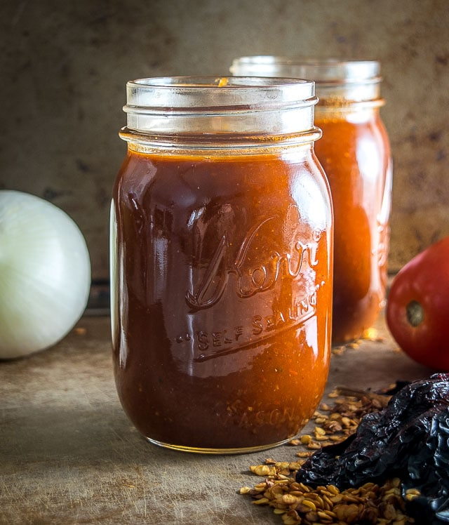
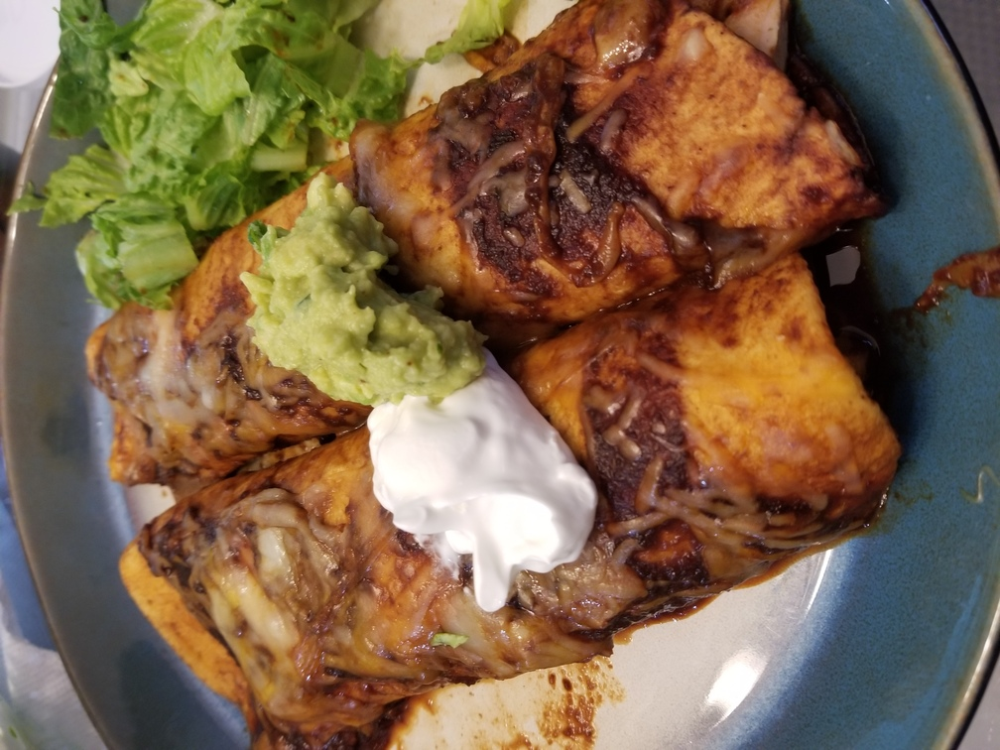

Enchilada Sauce
Originally from: Mexican Please

Amounts below are for 10 - 12 cups
Ingredients
- 15-20 dried Ancho chili peppers
- 7-8 plum tomatoes (approx. 1.5 pounds)
- 3 onions
- 8 garlic cloves
- 8 cups stock
- 1 tablespoon Mexican oregano
- 1 teaspoon cumin
- 2 teaspoons salt
- freshly cracked black pepper
Directions
Prepare chilis by removing stems and seeds. Roast for a few minutes in over or stovetop. Add to hot water and let soak 20 - 30 minutes.
While chilis soak, roast tomatoes in 400° oven for 20 - 30 minutes.
Chop onions and then sauté with garlic cloves until lightly browned.
Add cooked ingredients and stock to blender, using multiple batches depending on size.
Strain sauce if desired for smoother consistency.
Add oil to saucepan, and add remaining spices. Add blended sauce. Simmer for 30 - 40 minutes or until desired consistency is reached.
Notes
-
2020-09-22 - made with about 1/4 of ingredient amounts. I used one 28 oz. can plum tomatoes, and added did not roast. Did add about half to onions to brown some. Kept spices around original amounts. I did add sugar to sauce as well, as we were using this for sweet pork. Thought worked well, and made good enchiladas next day.
